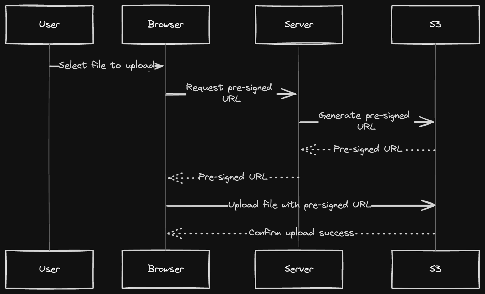

Progressive disclosure
We split the form into domain, upload, deploy, and success states.
GainLess cognitive load and clearer next actions.
CostMore component state and transition handling.
Design decisions and tradeoffs
smoll.host started as a working upload form. The redesign made the same technical path feel guided, legible, and rewarding: pick a subdomain, drop one HTML file, and leave with a live URL.
Before to after
The old page exposed every decision at once. The new page treats deployment as a short conversation, keeping each screen focused on exactly one commitment.
Before
Domain naming, upload, warnings, and submission competed for attention before the user knew whether their name was valid.
After
Validation happens inline, the upload appears only when it matters, and the result becomes a dedicated success moment.
Step 1 of 3
Tradeoffs
Every change had a cost. The guiding rule was simple: optimize for a first deploy feeling obvious, while preserving shortcuts for users who already know what they are doing.
We split the form into domain, upload, deploy, and success states.
Subdomain checks moved closer to typing, with a 300ms debounce and direct repair copy.
A button spinner became a progress bar plus a human-readable deployment checklist.
The final state replaced a toast and reset with a live URL, copy action, and open action.
The empty dashboard became a warm prompt with a direct path back to creation.
Upload and domain errors moved into the controls that caused them.
Evolution in git
The commit history shows the product maturing in layers: identity first, ownership next, then dashboards, polish, and reliability fixes.
56532e4GitHub auth, Postgres, Drizzle schema, and sessions made subdomains belong to real users instead of anonymous uploads.
1270ce6Domain workflows, validation, storage, and Redis caching moved hosting into a proper backend path with ownership checks.
44175f5The product gained a place to manage domains, replace HTML, and return to previous work instead of only creating new sites.
79c5c9fNavigation, layout, dashboard styling, and upload interactions were tightened once the core workflow existed.
c2bbf82Domain deletion was made safer, which matters once users can manage real hosted sites rather than test artifacts.
working treeThe current redesign adds a wizard, deployment checklist, success card, inline upload errors, and a more useful empty dashboard.
Architecture visual
The interface became more guided, but the backend idea stayed lean: the browser asks the app for a safe upload path, then sends the file to S3.

image.png, reused here to show why the UI checklist says “Uploading to S3” instead of exposing raw API details.Principles
The strongest decisions are the ones that repeat across states: fewer visible choices, clearer feedback, and a finish that feels like an outcome.
Files touched
The implementation stays close to the user journey: homepage framing, domain wizard, uploader feedback, dashboard empty state, and two dedicated deploy states.